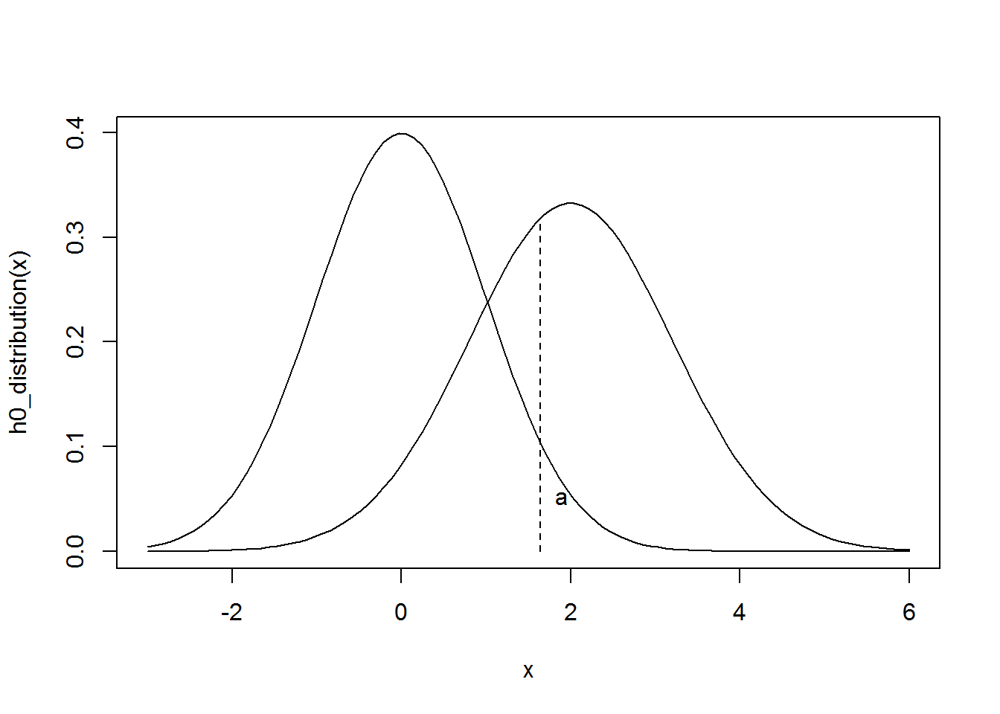
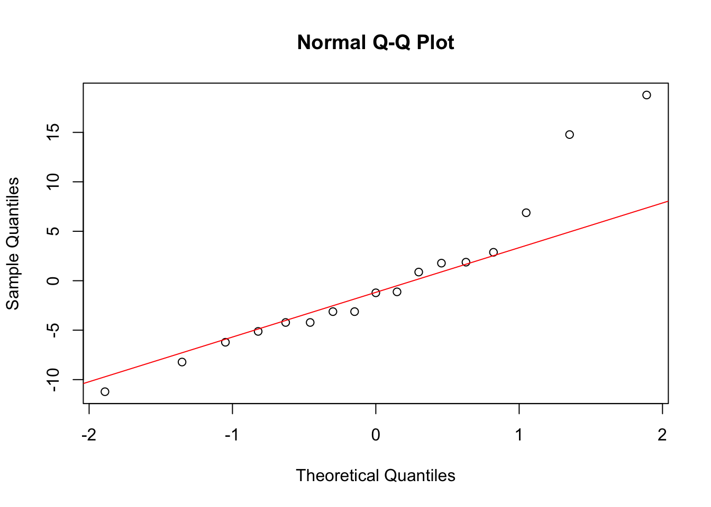

Significance testing and Power 1
Wouter van Amsterdam
2017-10-26
Last updated: 2017-10-31
Code version: 52f415c
Day 3: Intro
Tutor: Rebecca Stellato
Testing with T-distributions
T-statistic for single sample t-test:
\[T = \frac{\bar{Y}-\mu_{0}}{s/\sqrt{n}}\]
There are infinetly many possible \(h_1\) hypothesis, we take a single \(h_0\) hypothesis.
Three ways of testing
- Take \(H_0\), sample size \(n\), significance level \(\alpha\). Take critical values of \(T\) for given \(\alpha\) and \(n\). Check T-statistic of sample and compare with rejection region.
- For a given sample T-statistic, calculate probability of finding a T-statistic or more extreme under \(H_0\)
- Calculate a \(100*(1-\alpha)\)% confidence interval around the sample mean, and check if \(H_0\) is included in the interval.
For continuous data, these three approaches are equivalent. For categorical data, there can be differences.
Two sample tests
Model
\[Y_{ij} = \mu_i + \beta_i + \epsilon_{ij}\]
Measured = group mean + block effect + error \(i = 1,2\) (the groups), \(j = 1,2,3,...,n\) (the individuals) \[\epsilon \sim N(0, \sigma_{\epsilon}),\ \beta_i \sim N(0, \sigma_{\beta})\]
Now the T-statistic
\[T = \frac{\bar{d}-\mu_{0}}{s_{d}/\sqrt{n}}\]
Where \(d\) are all differences, \(n\) is the number of pairs.
load(amstR::fromParentDir("data/balance.RData"))
t.test(balance[balance$age == "Elderly",]$FB,
balance[balance$age == "Elderly",]$SS, paired = T)
Paired t-test
data: balance[balance$age == "Elderly", ]$FB and balance[balance$age == "Elderly", ]$SS
t = 1.7044, df = 8, p-value = 0.1267
alternative hypothesis: true difference in means is not equal to 0
95 percent confidence interval:
-1.451046 9.673268
sample estimates:
mean of the differences
4.111111 t.test(balance$FB,
balance$SS, paired = T)
Paired t-test
data: balance$FB and balance$SS
t = 2.2494, df = 16, p-value = 0.03892
alternative hypothesis: true difference in means is not equal to 0
95 percent confidence interval:
0.2066374 6.9698332
sample estimates:
mean of the differences
3.588235 QQ-plot: Goes wrong when you see patterns * J-shape = left-skewed
Most of the time: close to the mean it is normally distributed.
Catch-22 situation of small samples * You cannot rely on the central limit theory, so you need normality * You cannot really test normality for small samples
For paired data: spaghetti plots can be very informative
Different distributions
Different test-statistic, but keep the same algorithm: * state \(H_0\) and \(\alpha\) (one-sided or two-sided) * determine test statistic (decide on the test to use) * calculate test statistic (\(T\), \(\chi^2\)) * decide whether to reject \(H_0\) (with one of 3 options) * state conclusion
Power
- Type 1 error = \(\alpha\)
- Type 2 error = \(\beta\)
- Power = \(1-\beta\)
For educational reasons, firstly stick to one-sided tests
norm_function <- function(mu, sd) {
f = function(x) (1/(sd*sqrt(2*pi)))*exp(-(x-mu)^2/(2*sd^2))
return(f)
}
# create distributions for sample means under H0 and H1
# assuming large sample size, so T-distribution converges to normal distribution
mu0 = 0; sd0 = 1;
mu1 = 2; sd1 = 1.2;
h0_distribution = norm_function(mu = mu0, sd = sd0)
h1_distribution = norm_function(mu = mu1, sd = sd1)
alpha = 0.05
boundary_value = qnorm(p = .95, mean = mu0, sd = sd0)
xmin = -3
xmax = 6
## using ggplot
require(ggplot2)Loading required package: ggplot2ggplot(data.frame(x = c(xmin, xmax)), aes(x)) +
stat_function(fun = h0_distribution) +
stat_function(fun = h0_distribution,
xlim = c(boundary_value,xmax),
geom = "area", alpha = 0.5) +
stat_function(fun = h1_distribution) +
stat_function(fun = h1_distribution,
xlim = c(xmin, boundary_value),
geom = "area", alpha = 0.25) +
theme_bw()
## using base plot
# curve(h0_distribution, xlim = c(-3, 6))
# curve(h1_distribution, add = T)
# lines(x = rep(boundary_value, 2), y = c(0, h1_distribution(boundary_value)), lty = 2)
# text(x = boundary_value, y = .5*h0_distribution(boundary_value), labels = "a", pos = 4)
# abline(v = mu0, lty = 2)
# abline(v = mu1, lty = 2)Get boundary value \(b\) from: \[P(\bar{Y}>b|H_0) = P(Z>\frac{b-\mu_{0}}{\sigma/\sqrt{n}}) = \alpha\] Plug \(b\) here to find power: \[P(\bar{Y}>b|H_1) = P(Z>\frac{b-\mu_{1}}{\sigma/\sqrt{n}}) = 1-\beta\]
So again: * Get decision boundary from \(H_{0}\) * Get probability of getting boundary value or more extreme under \(H_{1}\)
Power of one-sided test is higher, provided that the direction is correct.
You can do this using the T-distribution, than the standard deviation does not need to be known.
Power calculations post-hoc are controversial.
Day 4
Two independent sample t.test
With unequal variances
Measurement = group mean + error \[Y_{ij} = \mu_i + \epsilon_{ij} \] \(i = 1,2\); \(j = 1, ..., n_i\) \(\epsilon_{ij} \sim N(0, \sigma_i^2)\) and independent.
\[H_0:\ \mu_1-\mu_2 = \mu_0 = 0\] \[H_1:\ \mu_1-\mu_2 \neq \mu_0\]
Welch’s standard error
\[SE(\bar{Y_1}-\bar{Y_2}) = \sqrt{\frac{s_1^2}{n_1}+\frac{s_2^2}{n_2}}\]
Welch T is t-distributed with a non-integer degrees of freedom.
With equal variance assumption:
** note \(\sigma_i\) vs \(\sigma\) \(\epsilon_{ij} \sim N(0, \sigma^2)\) and independent, homegeneity of variances \(\sigma_1^2 = \sigma_2^2 = \sigma^2\)
Or with Levence’s test: problem is that you can never prove \(H_0\), we can only reject it given some data. Furthermore: every test will increase the risk of getting a type-1 error (false-positives).
Best way of assessing assumptions: qreate QQ-plot with all residuals
Pooled method \[SE(\bar{Y_1}-\bar{Y_2}) = s_p*\sqrt{\frac{1}{n_1}+\frac{1}{n_2}}\] With \[s_{pooled} = \frac{(n_{1}-1)*s_{1}^2 + (n_{2}-1)*s_{2}^2}{n_{1}+n_{2}-2}\]
Due to three problems, always do Welch. * we can never prove \(H_0\) * increased risk of type-1 errors
In the case of actually equal variance, you lose some power.
load(amstR::fromParentDir("data/balance.RData"))
fit_old <- lm(balance[balance$age == "Elderly",]$SS~1)
fit_young <- lm(balance[balance$age == "Young",]$SS~1)
resid_old <- resid(fit_old)
resid_young <- resid(fit_young)
qqnorm(c(resid_old, resid_young))
qqline(c(resid_old, resid_young), col = "red")
# summary(fit_old)
# t.test(balance$FB~balance$age)
# plot(fit_old, which = 2)
# plot(fit_young, which = 2)
fit1 <- lm(SS ~ age, data = balance)
plot(fit1, which = 2)
One-sided t-test
Do only when research question is one-sided. Are women shorter than men
If you think a new therapy is better, but you are not sure, use two-sided.
To go from two-sided to one-sided, devide p-value by 2.
Sample size estimation
Remaining question: * Validity of determining minimally detectable effect post-hoc
For known \(\sigma\)
\[n = ((Z_{\alpha}+Z_{1-\beta})*\frac{\sigma}{h_1-h_0})^2\]
With \(Z_{\alpha}\) one-sided or two-sided, \(Z_{\beta}\) always one-sided
For unknown \(\sigma\)
Do iterative t-statistic sample size calculation.
\[n = ((t_{/alpha, v}+t_{1-/beta, v})*\frac{s}{h_1-h_0})^2\]
Where s is the estimated standard deviation, and \(v\) is iteratively determined. * start with infinitely high d.f. (which is equivalent to \(Z\)-value from normal distribution) and find optimal sample size * plug rounded up sample size minus 1 as d.f. and redo calculation * iterate until conversion
Paired t-test is equivalent to single sample t-test with standard deviation of the difference. That can be estimated with
\[S_d = \sqrt{2*s^2*(1-\rho)}\]
Where \(\rho\) is the correlation between measurements of the 2 groups.
For unpaired groups
\[n = 2*((Z_{\alpha}+Z_{\beta})*\frac{s_p}{h_1-h_0})^2\]
Where \(s_p\) is the pooled variance, \(n\) is the number of people in each group.
For unequal variance: use the r-package samplesize.
Cohen’s effect-size: for unknown difference and standard deviation
Effect size in terms of differences in terms of standard deviations.
- small: 0.2
- medium: 0.5
large: 0.8
- 1 mean: \(ES = (\mu_1-\mu_0)/\sigma\)
- 2 paired means: \(ES = (\mu_1-\mu_0)/\sigma_d\) (d = difference)
- 2 independent means: \(ES = (\mu_1-\mu_0)/\sigma\)
etc etc for each test
- Two means or proportions small (0.2) medium (0.5) large (0.8)
- Correlation or contingency tables small (0.1) medium (0.3) large (0.5)
- Linear regression small (0.02) medium (0.15) large (0.35)
More than two means (ANOVA) small (0.1) medium (0.25) large (0.4)
If you have no idea, do not choose a large effect size.
Session information
sessionInfo()R version 3.3.2 (2016-10-31)
Platform: x86_64-apple-darwin13.4.0 (64-bit)
Running under: macOS Sierra 10.12.6
locale:
[1] en_US.UTF-8/en_US.UTF-8/en_US.UTF-8/C/en_US.UTF-8/en_US.UTF-8
attached base packages:
[1] stats graphics grDevices utils datasets methods base
other attached packages:
[1] ggplot2_2.2.1
loaded via a namespace (and not attached):
[1] Rcpp_0.12.11 survcomp_1.22.0 RColorBrewer_1.1-2
[4] git2r_0.19.0 plyr_1.8.4 tools_3.3.2
[7] digest_0.6.12 evaluate_0.10.1 tibble_1.3.3
[10] gtable_0.2.0 lattice_0.20-35 rlang_0.1.1
[13] Matrix_1.2-10 yaml_2.1.14 prodlim_1.6.1
[16] bootstrap_2017.2 amstR_0.1.3 stringr_1.2.0
[19] knitr_1.17 SuppDists_1.1-9.4 rprojroot_1.2
[22] grid_3.3.2 data.table_1.10.4 survival_2.41-3
[25] rmarkdown_1.6 lava_1.5 rmeta_2.16
[28] magrittr_1.5 backports_1.1.0 scales_0.4.1
[31] htmltools_0.3.6 survivalROC_1.0.3 splines_3.3.2
[34] colorspace_1.3-2 labeling_0.3 KernSmooth_2.23-15
[37] stringi_1.1.5 lazyeval_0.2.0 munsell_0.4.3 This R Markdown site was created with workflowr